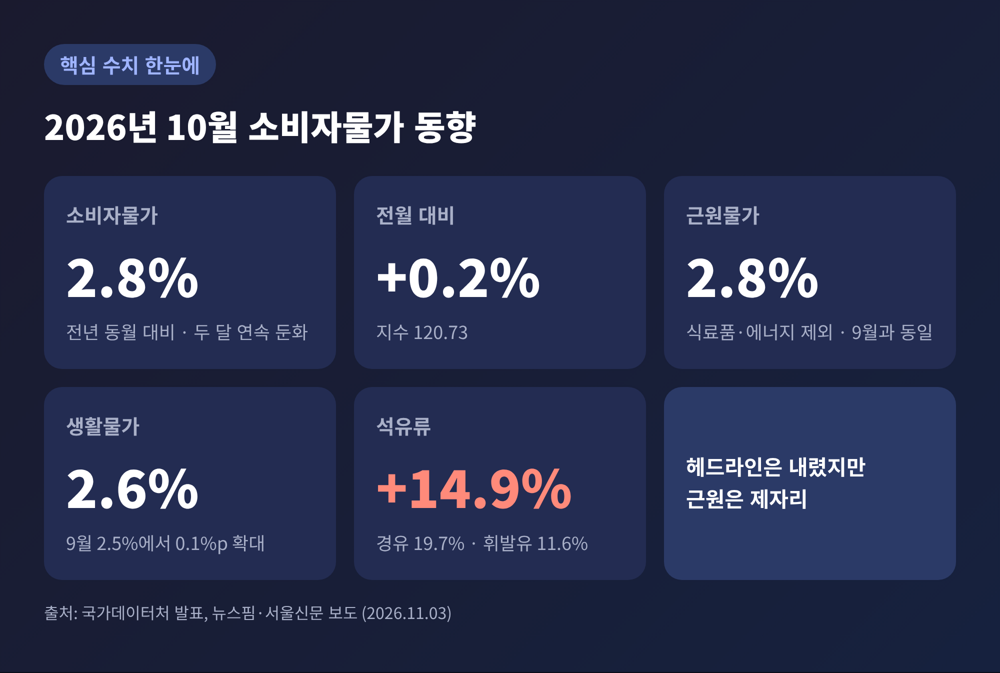
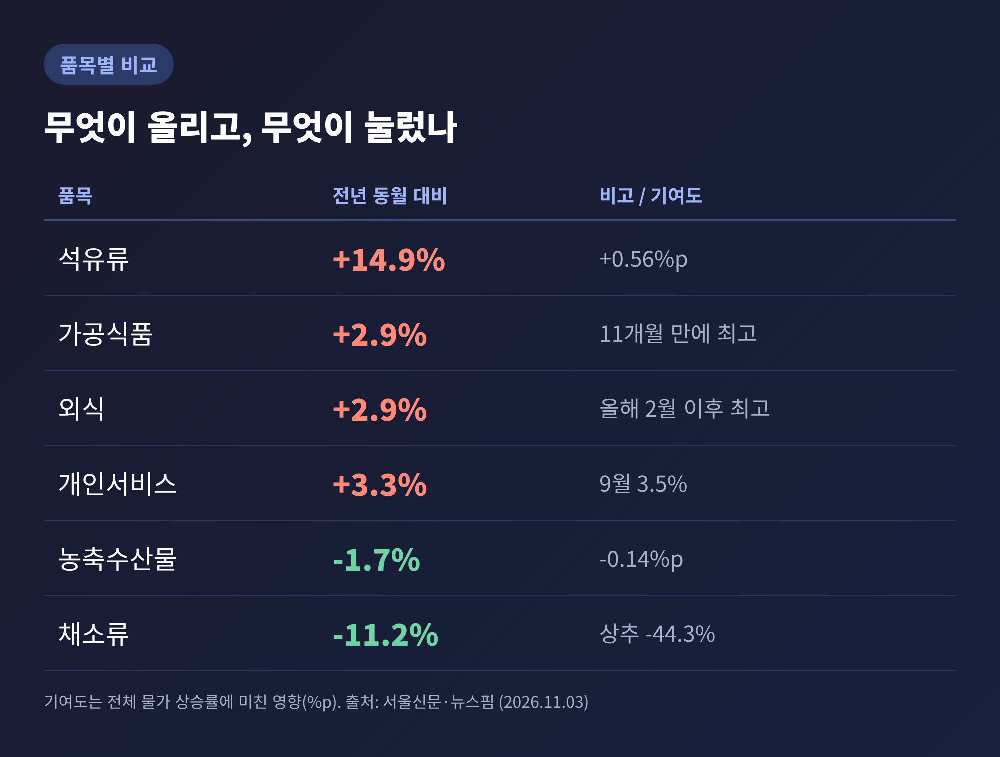
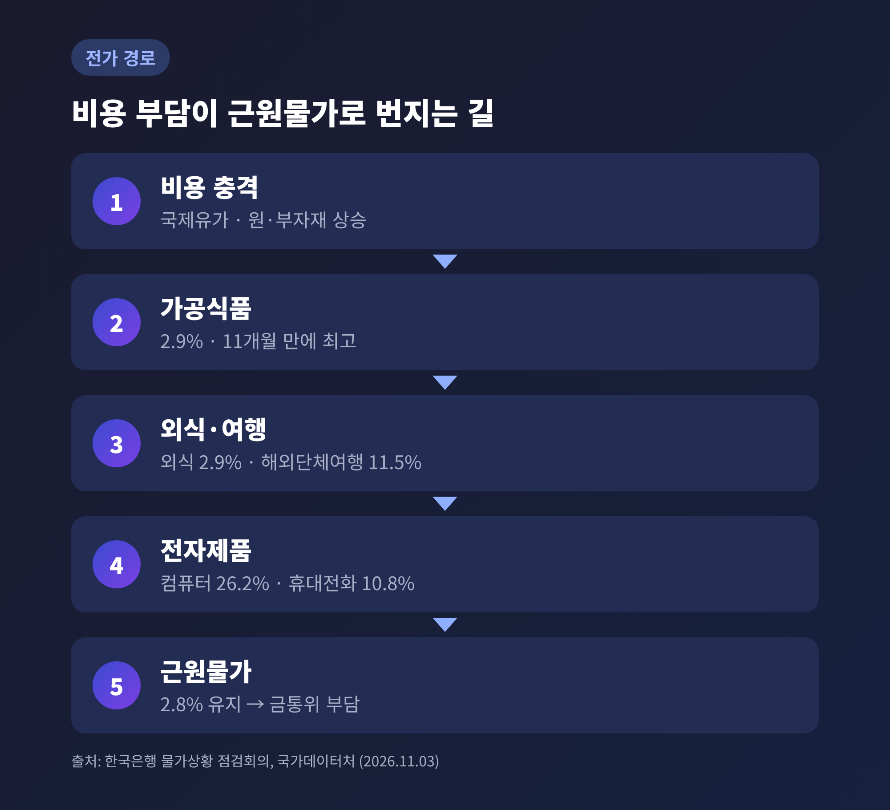
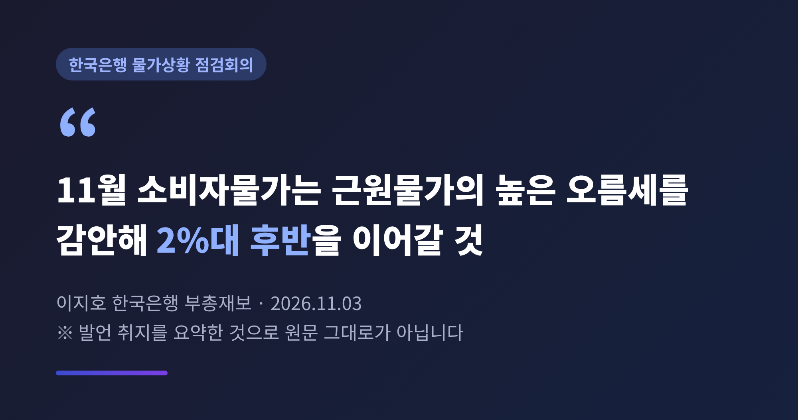
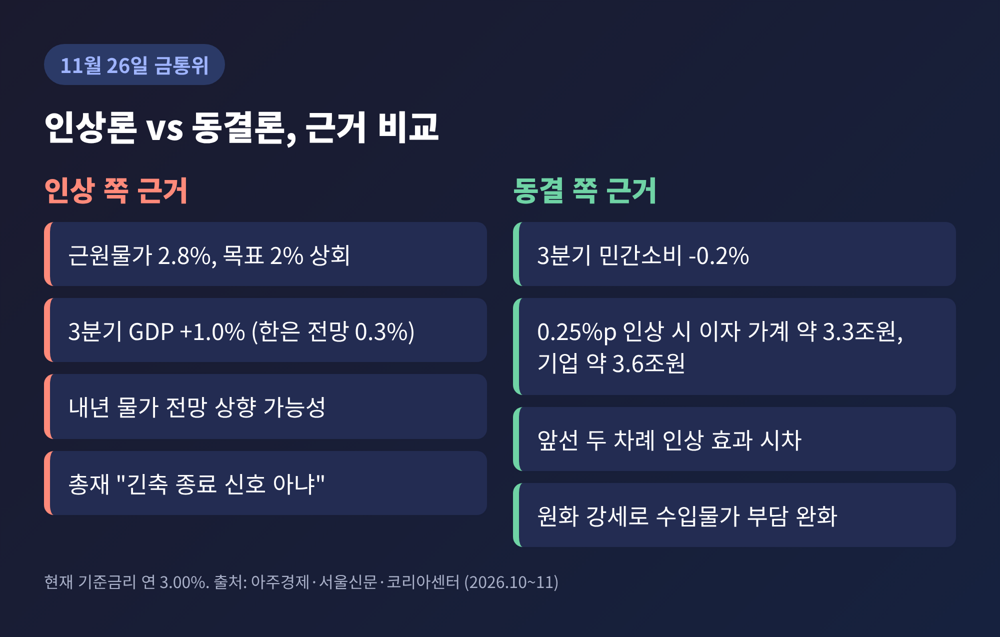

10월 소비자물가 2.8% 두 달째 둔화, 근원물가는 꺾이지 않았다

오늘은 11월 3일 발표된 10월 소비자물가 결과를 정리해 보려 합니다. 헤드라인 물가는 전년 동월 대비 2.8%로 두 달 연속 둔화했지만, 식료품과 에너지를 뺀 근원물가는 2.8%에서 꺾이지 않았습니다. 이 한 줄이 이달 26일 금융통화위원회의 셈법을 어떻게 바꾸는지 따라가 보겠습니다.
■ 무슨 일: 헤드라인은 내려가고, 속살은 그대로
국가데이터처가 3일 발표한 10월 소비자물가지수는 120.73(2020년=100)입니다. 전년 동월보다 2.8% 올랐고, 전월보다는 0.2% 올랐습니다.
상승률 흐름은 이렇습니다. 7월 2.8%, 8월 3.1%, 9월 2.9%, 10월 2.8%. 8월을 정점으로 두 달 내리 낮아졌습니다. 1~10월 누계로는 2.7%입니다.

블룸버그 집계를 인용한 보도에 따르면 시장 전망치도 2.8%였습니다. 헤드라인은 예상대로였다는 뜻입니다. 같은 보도에서 근원물가 전망치는 2.7%였는데, 실제는 2.8%였습니다. 다만 이 전망치는 단일 보도에서만 확인되므로, 방향을 읽는 참고 정도로 보시면 좋겠습니다.
생활물가지수는 2.6%로 9월(2.5%)보다 0.1%포인트 높아졌습니다. 장바구니에서 체감하는 물가는 헤드라인만큼 시원하게 내려오지 않았다는 이야기입니다.
■ 품목별로 보면: 기름값이 올리고 채소값이 눌렀다
숫자를 뜯어보면 두 힘이 팽팽하게 맞섰습니다.
먼저 위로 끌어올린 쪽입니다. 석유류가 14.9% 올라 전체 상승률을 0.56%포인트 끌어올렸습니다. 경유 19.7%, 휘발유 11.6%, 자동차용 LPG 14.5%입니다. 한국은행은 중동 긴장으로 국제유가가 높은 수준을 유지한 영향이라고 설명했습니다.
가공식품은 2.9%로 9월(2.1%)보다 껑충 뛰었습니다. 지난해 11월 이후 11개월 만에 가장 높은 수준입니다. 즉석식품이 12.4%, 빵이 5.9% 올랐습니다. 원·부자재 비용 상승과 출고가 인상이 가격에 반영된 결과로 풀이됩니다. 외식도 2.5%에서 2.9%로 올라 올해 2월 이후 가장 높았습니다.
반대로 눌러준 쪽은 농산물입니다. 농축수산물은 1.7% 내려 전체 물가를 0.14%포인트 낮췄습니다. 농산물은 7.5%, 채소류는 11.2% 하락했습니다. 상추는 44.3%, 오이는 39.5%, 사과는 13.4% 내렸습니다. 출하가 늘고 가을 과일 공급이 확대된 덕분입니다.
물론 모든 농축수산물이 싼 것은 아닙니다. 축산물은 4.8%, 수산물은 5.4% 올랐고, 국산 쇠고기는 9.1%, 갈치는 11.9% 올랐습니다.

■ 왜 중요한가: 기름과 채소를 빼도 2.8%입니다
이번 발표에서 가장 눈여겨볼 대목은 근원물가입니다. 식료품과 에너지를 제외한 지수는 2.8%로 9월과 같았습니다. 농산물과 석유류를 제외한 지수는 오히려 9월 2.7%에서 2.8%로 올랐습니다.
예전에는 유가와 농산물 값이 물가를 흔들었습니다. 지금은 그 바깥의 서비스와 내구재가 버티고 있습니다. 개인서비스는 3.3%(9월 3.5%), 내구재는 4.8%(9월 4.9%) 올랐습니다. 두 항목 모두 소폭 낮아지기는 했으나 여전히 높은 수준입니다. 국제항공료는 20.7%, 해외단체여행비는 11.5%, 컴퓨터는 26.2%, 휴대전화는 10.8% 올랐습니다.
한국은행의 진단도 같은 방향입니다. 3일 물가상황 점검회의에서 이지호 부총재보는 10월 물가가 개인서비스와 내구재 중심으로 높게 이어졌고, 누적된 비용 부담이 여행·외식 서비스와 전자제품 가격에 반영되고 있다고 평가했습니다.

■ 정부와 한은은 어떻게 읽었나
정부의 설명 가운데 눈길을 끄는 것이 석유류 최고가격제입니다. 보도에 따르면 정부는 최고가격제가 없었다면 10월 물가가 3.6%였을 것으로 추정합니다. 제도가 물가를 0.8%포인트 낮췄다는 계산입니다. 이 추정은 한 매체의 보도에서만 확인되므로, 정부 추정치라는 점을 감안해 읽으셔야 합니다.
그 말은 뒤집어 보면 부담이기도 합니다. 석유류 상승률은 14.8%에서 14.9%로 사실상 제자리였고, 가격 상한이라는 인위적 장치가 받치고 있습니다. 5월에도 재정경제부는 최고가격제와 유류세 인하가 4월 물가를 1.2%포인트 낮췄다고 밝혔습니다. 정책의 효과가 크다는 것은 그만큼 빠졌을 때의 충격도 크다는 뜻입니다.
한국은행은 11월에도 소비자물가가 2%대 후반을 이어갈 것으로 내다봤습니다. 국제유가 영향은 받겠지만 근원물가의 높은 오름세를 감안했다는 설명입니다. 중동 상황의 불확실성, 비용 충격의 전이, 수요 측 압력 확대를 경계 요인으로 꼽았습니다.

■ 11월 26일 금통위: 인상이냐 동결이냐
현재 기준금리는 연 3.00%입니다. 한국은행은 7월과 8월에 0.25%포인트씩 올린 뒤 10월 22일 동결했습니다. 신현송 총재는 당시 동결이 긴축 종료 신호는 아니라고 선을 그었고, 물가가 목표에 수렴한다는 확신이 들 때까지 대응하겠다고 했습니다. 추가 인상 여부는 3분기 GDP와 10월 물가에 달렸다는 취지였습니다.
그 두 숫자가 이제 나왔습니다. 3분기 GDP는 전기 대비 1.0% 성장해 한은의 종전 전망(0.3%)과 시장 전망(0.8%)을 모두 웃돌았습니다. 10월 물가는 둔화했으나 근원은 그대로입니다. 인상론에 힘이 실리는 조합입니다.
실제로 iM증권 김명실 연구원은 11월에 0.25%포인트 올려 3.25%가 될 것으로 전망했습니다. 근원물가가 목표 2%를 웃도는 상태로 지속되고, 성장과 물가 전망의 상방 위험이 크다는 이유입니다. 신 총재는 물가가 목표에 가까워지는 시점을 2028년으로 내다보고 있습니다.
반론도 만만치 않습니다. 3분기 민간소비는 0.2% 줄었습니다. 성장률은 반도체가 이끌고 있고, 가계의 살림은 그만큼 따라가지 못한 셈입니다. 보도에 따르면 기준금리를 0.25%포인트 올릴 때 이자 부담은 가계에서 약 3조 3천억 원, 기업에서 약 3조 6천억 원 늘어납니다. 신 총재도 국정감사에서 취약 차주가 통화정책으로 고통을 느낄 수 있다고 말한 바 있습니다. 앞선 두 차례 인상의 효과가 완전히 나타나기까지 시간이 걸린다는 점, 원화 강세가 수입물가 부담을 덜어줄 수 있다는 점도 동결 쪽의 근거입니다.

■ 전망: 26일까지 지켜볼 세 가지
정리하면 이번 물가는 인상론을 꺾지도, 확정하지도 못했습니다. 26일까지 확인할 변수는 세 가지입니다.
첫째, 국제유가입니다. 한은도 11월 물가가 유가 움직임에 영향받는다고 했습니다. 중동 정세에 따라 석유류가 다시 오를 수 있습니다.
둘째, 서비스와 가공식품입니다. 가공식품이 11개월 만의 최고, 외식이 올해 2월 이후 최고였습니다. 이 흐름이 이어지면 근원물가가 쉽게 내려오기 어렵습니다.
셋째, 같은 날 나올 한은의 수정 경제전망입니다. 지난달 금통위는 내년 소비자물가 2.3%, 근원물가 2.5%를 제시했는데, 이를 웃돌 수 있다는 관측이 나옵니다. 성장률 전망도 상향 가능성이 거론됩니다.
결국 남는 것은 하나입니다. "헤드라인은 내렸어도, 금리를 정하는 쪽이 보는 것은 근원물가"라는 점입니다. 11월 26일 결정이 어느 쪽으로 기울든, 그 근거는 이번 2.8%라는 숫자 안에 이미 들어 있습니다.
※ 이 글은 공개된 보도를 정리한 정보 제공용이며, 투자 권유가 아닙니다. 금리·환율·자산 관련 결정은 본인의 판단과 책임으로 하시기 바랍니다. 수치는 2026년 11월 3일 기준 언론 보도에 근거했고, 국가데이터처 원문 보도자료는 직접 확인하지 못했습니다.